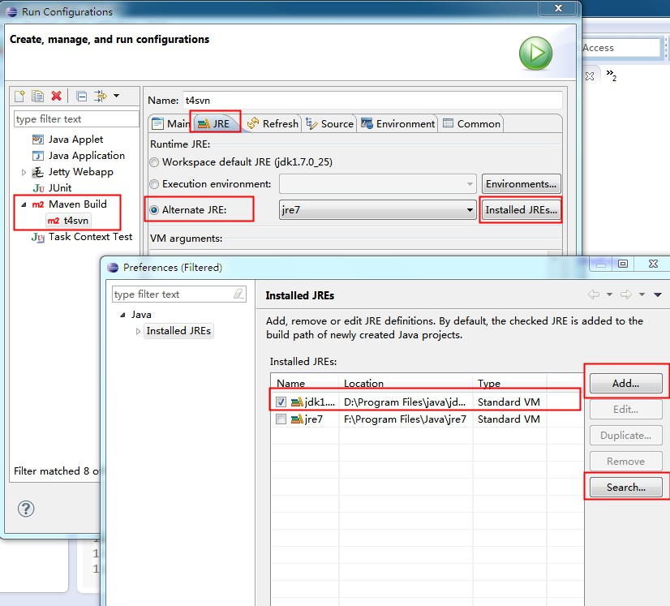

eclipse maven插件打包出错解决
Table of Content
在windows下面安装的eclipse的maven插件，在项目上右键run->Run Configuration中新建一个maven Build配置用来进行maven打包。如图：

点击apply应用配置，然后点击run进行打包。发现会提示这样的错误:
Unable to locate the Javac Compiler in: F:\Program Files\Java\jre7\..\lib\tools.jar Please ensure you are using JDK 1.4 or above and not a JRE (the com.sun.tools.javac.Main class is required). In most cases you can change the location of your Java installation by setting the JAVA_HOME environment variable.
出错的原因是maven使用了错误的java配置环境（使用的是eclipse的JRE配置，默认使用的是JRE不是JDK）所以没有javac，无法编译代码。
这个问题的解决方法是给eclipse配置新的JRE，让他使用JDK而不是JRE作为JRE（JDK包含JRE）。
配置如下： 
在Run Configurations中配置Maven Build配置的JRE项，选择第三个Alternate JRE，然后看看列表中有没有JDK，如果没有点击右边的Installed JRES，出现对话框， 然后点击Add添加JDK的路径进来，或者点击Search指定一个路径，查找安装的JDK。
设置完成后，回到Run Configurations对话框，在Alternate JRE处选择刚刚添加的JDK，然后点击Apply，再点击Run进行打包。
这时，观察到包可以打成功了:)
comments powered byDisqus